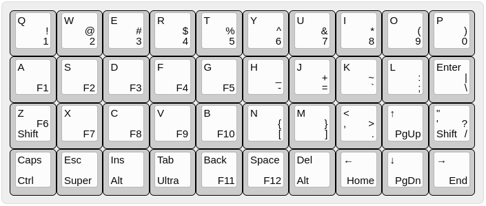
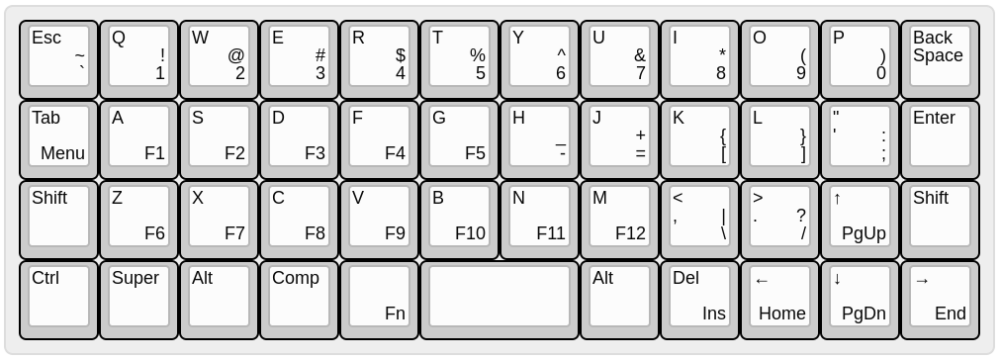
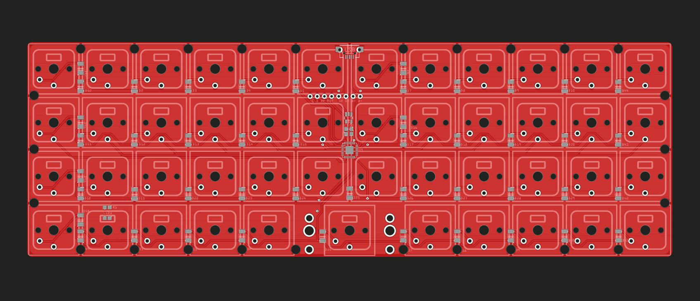
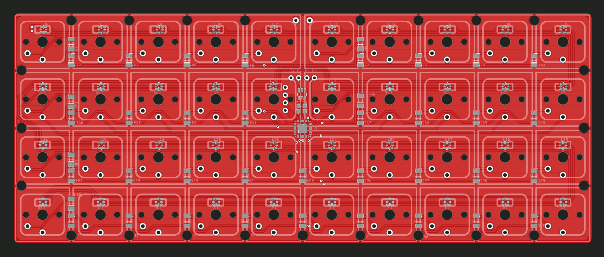

Better Shifts and More Variations¶
Published on 2020-08-31 in Dorsch 40k Keyboard.
I’m using this as my main keyboard now, and there are still three issues that I struggle a bit with. The first one is with the shift key — it’s too low and only one, which means it’s awkward to press it with certain key combinations. Second problem is with the Ctrl key not being in the corner, and the last with the Backspace being in a completely wrong place, next to the Space. I managed to solve the first two today by remembering that I can do hold/tap with any key, not just the bottom row, and by moving the Shift to the Z and Quote keys, moving Ctrl to the freed place, and adding a Super key. The new layout now looks like this:
But before I came up with this, I tried to fix it by adding two more columns for the shifts and other control keys, arriving at something very similar to the Planck layout:
Note that this keyboard no longer needs the hold/tap mechanism, as it has enough keys for modifiers to have their own dedicated keys. Anyways, I designed and ordered a PCB for this new layout, so I might be trying it later this year:
Another alternative design for this keyboard (which I designed but didn’t order yet) is a version with RGB LEDs under every key. Someone observed on Twitter that it would be nice to have a Python- programmable keyboard with lights that you could control with your own program.
It was a bit of work to fit that string of 40 APA102s on there, but I managed. I’m not sure if I want to actually build that version myself, though — I guess I don’t enjoy keyboard lights so much, I’m a boring person. Maybe if it was programmed as a MIDI device, which is perfectly doable with CircuitPython…